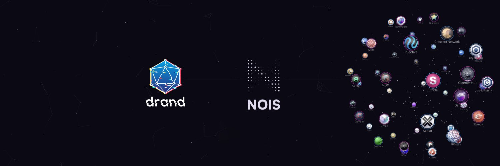
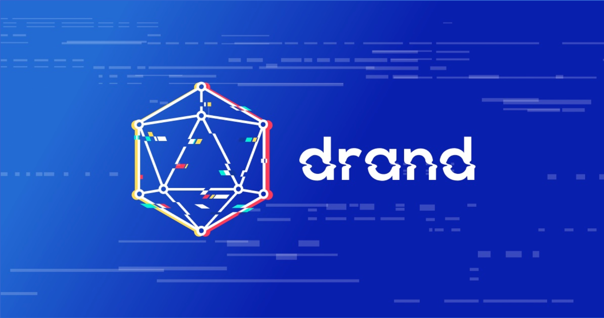
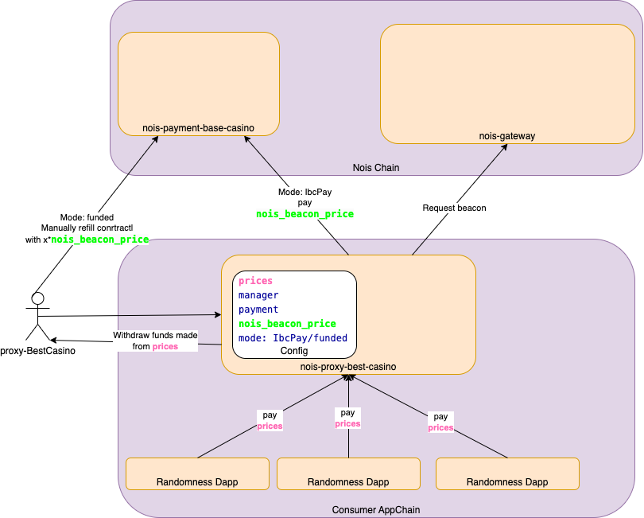

Nois Documentation
Just the docs.
General
In this chapter you can read what Nois is about and how it works at a high level. This could be equally interesting for developers, investors, infrastructure operators as well as blockchain enthusiats.
Overview

Nois is a Proof of Stake blockchain protocol that allows developers to use secure, unbiased and cost efficient randomness via IBC. Inside this documentation you will find all the instructions in order to:
- Setup a full node and become a Nois validator earning $NOIS while sustaining the chain.
- Fix common validators/full-node problems.
- Use Nois to bring randomness into your decentralised application.
- Run a relayer
- Run a drand bot
How it works
The following steps are taken to get the randomness:
- A Contract on a CosmWasm and IBC-enabled chain (such as Juno or Stargaze) sends a message to a Nois proxy contract on the same chain. A reply with further information regarding the job is sent to the original contract.
- The proxy contract sends an IBC message to its couter-part on the Nois Network where the job is put in the queue.
- Once the drand beacon of the correct round is released, a network of bots sends it to the Nois Network for verification.
- Upon successful verfication, the pending jobs for the round are processed. For every matching job, an IBC response with the beacon is sent.
- The proxy contract receives the beacon and sends a callback to the original contract.
Drand
Nois uses drand as a source of secure, unbiased and unpredictable randomness. The randomness is generated by drand then it is brought to the nois chain where it is verified. Drand is not a blockchain but a decentralised network of institutions and reliable organisations such as Cloudflare. For more details you can visit the drand website https://drand.love/.

FAQ
👶 I am a 5 year old kid
What is Nois
Nois is a special computer program that helps other computer programs make things happen by surprise. These programs use Nois to make games more fun, or to help people make important decisions fairly. Nois uses a secret magical code that nobody knows, so nobody can cheat and guess what will happen next. Nois is like a magic box that helps make things more interesting and fair.
How can I buy Nois
I'm sorry, but Nois is not something that can be bought. It is a decentralized network that provides randomness to other blockchain networks. As a 5 year old, it is unlikely that you would have a need for this type of technology. Instead, you can focus on learning and growing in a healthy and fun way.
🕸️ I am a Web3 user
Why should I care about Nois as an end user?
As an end user, you should care about Nois because it helps to ensure the fairness and unpredictability of the dapps you use. For example, if you use a lottery or gaming dapp that incorporates randomness generated by Nois, you can be confident that the outcomes are truly random and not susceptible to manipulation. This can help to ensure that the dapps you use are fair and trustworthy, providing a better experience for you as a user. Additionally, the use of Nois can help to improve the security of dapps by providing a secure and reliable source of randomness, reducing the likelihood of vulnerabilities and attacks.
What are the usecases for decentralised unbiased randomness and how can Nois help with that?
Decentralized unbiased randomness is useful for many different applications, such as:
- Lotteries and other games of chance
- Cryptocurrencies and financial systems
- Voting and decision-making processes
- Cybersecurity and encryption
- Selecting randomly people or processes for fair verification
Nois can help with these use cases by providing a secure and reliable source of decentralized unbiased randomness. This can be used to create fair and transparent lottery systems, to improve the security of financial transactions and voting processes, and to enhance the security of encryption systems. By providing a decentralized and unbiased source of randomness, Nois helps to ensure that these applications are fair and secure.
👩🏻💻 I am a Techie
Why should i care about Nois as a techie?
As a techie, you should care about Nois because it provides a secure and reliable way to incorporate randomness into your dapps. Randomness is often essential for creating fair and unpredictable outcomes in games, lotteries, and other applications. Nois uses the drand protocol to generate randomness and makes it available to dapps via IBC, providing a simple and cost-effective solution for incorporating randomness into your projects. Additionally, Nois provides a toolbox for dapp developers, allowing you to easily integrate Nois into your dapps and transform the randomness you receive in a safe and standardised manner. This can help you to create more engaging and secure dapps for your users.
🤑 I am an Investor
Why should I care about Nois as an investor?
As an investor, you should care about Nois because it is an important component of the growing Cosmos ecosystem. By providing a secure and reliable source of randomness, Nois enables the development of a wide range of decentralized applications (dapps) that can benefit from randomly generated data. This can help to drive adoption and growth in the Cosmos ecosystem, potentially leading to increased value for investors. Additionally, as a decentralized and permissionless network, Nois offers the potential for investors to participate in its governance and potentially earn rewards for supporting the network.
Wen airdrop ser?
An investor walks into a bar and asks the bartender if he's heard of NOIS. The bartender replies, "Yeah, I've heard of it. It's a blockchain project that provides randomness to other chains through IBC." The investor then excitedly asks, "Do they do airdrops?" The bartender laughs and says, "No, I don't think they do airdrops. That's not really their focus. They're more interested in providing secure and unbiased randomness for dapps." The investor pouts and says, "Well, that's no fun. I was hoping to get some free tokens." The bartender shakes his head and says, "Sorry, buddy. You'll have to look elsewhere for your free money... Oh wait you look like a random dude... if you are random enough you might be eligible to get one."
Why does Nois only have 45 active validators? Any plans to increase that?
You can read this blog article to answer your questions
I know a chain that could use Nois, who can integrate Nois with that chain?
Anyone can do that. Nois is fully permissionless and any IBC enabled blockchain can integrate Nois to it. Formore info follow the docs section Integrate Nois to your Chain
Links
| Resource | Link |
|---|---|
| Homepage | https://nois.network |
| Blog | https://scripta.network/@noislabs |
| https://twitter.com/NoisRNG | |
| Discord | https://chat.nois.network |
| Github | https://github.com/noislabs |
| Whitepaper | https://whitepaper.nois.network/ |
| Documentation | https://docs.nois.network/ |
| Simulator | https://simulator.nois.network/ |
| Randomness | https://randomness.nois.network/ |
| IBC | https://ibc.nois.network/ |
for token holders and investors
In this chapter you can find anything related the NOIS token and its utility.
How to stake
Why staking
Staking $NOIS helps secure the network and allows to earn rewards. Unstaking $NOIS is subject to some ubonding time period where you wait for your tokens to be unstaked (21 days at the time of writing). During this period no rewards are distributed.
How and where to stake
You can use one of these websites to stake NOIS
Use Nois Randomness Beacon - For DAPP Developers
ℹ️ This section is intended for developers who are building applications that consume the randomness. If you are looking on the documentation to contribute to Nois then check The Nois Developement section (Under construction).
From a DAPP developer's perspective, getting randomness is as simple as 2 handlers in the contract. The first handler is GetNextRandomness(job_id) and the second handler is receive(randomness,job_id)
job_id: This is an internal identifier within the dapp to know what the randomness is going to be used for. It is up to you Dapp developer to define what it means. Imagine your Dapp has multiple players, and each one of them is rolling a dice. When player Bob rolls the dice, your DAPP chooses a job_id of type string to reference the randomness that will hold the randomness of the dice roll of Bob, Alice can roll a second dice with a different job_id. In another use case you can have on the same contract rounds of lottery A and rounds of lottery B. You can set one job_id per lottery so that the contract knows which randomness matches what game.
ℹ️ You can choose whichever string you like for the job_id The job_id is not about routing the randomness back to your contract. The routing callback will simply go to the contract that called the nois-proxy.
randomness: This is the raw randomness hexadecimal data that the dapp receives from Nois. Example of randomness:
ba17f71e631b9c3f6ad32ab44f6031ef885f2c3021c58edaa853b539f0225ea3

Contract implementation
Double dice game example:
https://github.com/noislabs/nois-dapp-examples
Import the nois packages
First thing is to import the packages. Add this to your Cargo.toml under dependencies.
#![allow(unused)] fn main() { // in cargo.toml [dependencies] nois = "0.7.0" }
Note that Rust editions prior to "2021" may require the addition of the
following option to the package section of your Cargo.toml for a
successful build:
#![allow(unused)] fn main() { [package] resolver = "2" }
Configure the proxy address
We need to add the address of the nois-proxy. One common way to do it is during the instantiation of the contract.
#![allow(unused)] fn main() { // in state.rs pub const NOIS_PROXY: Item<Addr> = Item::new("nois_proxy"); }
import the nois-proxy.
#![allow(unused)] fn main() { // in contract.rs use crate::state::{NOIS_PROXY}; }
Still in the contract.rs add the instantiation msg which validates the nois-proxy address and stores it
#![allow(unused)] fn main() { // in contract.rs pub fn instantiate( deps: DepsMut, _env: Env, info: MessageInfo, msg: InstantiateMsg, ) -> Result<Response, ContractError> { // The nois-proxy abstracts the IBC and nois chain away from this application let nois_proxy_addr = deps .api .addr_validate(&msg.nois_proxy) .map_err(|_| ContractError::InvalidProxyAddress)?; set_contract_version(deps.storage, CONTRACT_NAME, CONTRACT_VERSION)?; NOIS_PROXY.save(deps.storage, &nois_proxy_addr)?; Ok(Response::new() .add_attribute("method", "instantiate") .add_attribute("owner", info.sender)) } }
Declare the instantiation msg
#![allow(unused)] fn main() { // in msg.rs pub struct InstantiateMsg { pub nois_proxy: String, } }
Add the InvalidProxyError in error.rs
#![allow(unused)] fn main() { // in errors.rs #[error("Proxy address is not valid")] InvalidProxyAddress,T }
Triggering the randomness request
In order to request the randomness we need a function whether internal or publicly called. For this tutorial we can make a roll dice msg that will in turn call the getNextRandomness(id) handler. So the RollDice message gets the id as a parameter
#![allow(unused)] fn main() { // in contract.rs match msg { //RollDice should be called by a player who wants to roll the dice ExecuteMsg::RollDice { job_id } => execute_roll_dice(deps, env, info, job_id), } }
#![allow(unused)] fn main() { // in msg.rs pub enum ExecuteMsg { RollDice { /// An ID for this job which allows for gathering the results. job_id: String, }, } }
Call the GetNextRandomness(id) from the triggering function
#![allow(unused)] fn main() { //execute_roll_dice is the function that will trigger the process of requesting randomness. //The request from randomness happens by calling the nois-proxy contract pub fn execute_roll_dice( deps: DepsMut, _env: Env, _info: MessageInfo, job_id: String, ) -> Result<Response, ContractError> { let nois_proxy = NOIS_PROXY.load(deps.storage)?; let response = Response::new().add_message(WasmMsg::Execute { contract_addr: nois_proxy.into(), //GetNextRandomness requests the randomness from the proxy //The job id is needed to know what randomness we are referring to upon reception in the callback //In this example, the job_id represents one round of dice rolling. msg: to_binary(&ProxyExecuteMsg::GetNextRandomness { job_id })?, //In this example the randomness is sent from the gambler, but you may also send the funds from the contract balance funds: info.funds, // Just pass on all funds we got }); Ok(response) } }
Receiving the randomness
The nois-proxy contract sends the callback on the NoisReceive entrypoint. Therefore, you should add the Receive handler on your ExecuteMsg.
#![allow(unused)] fn main() { // in contract.rs // Adding ExecuteMsg::NoisReceive match msg { //RollDice should be called by a player who wants to roll the dice ExecuteMsg::RollDice { job_id } => execute_roll_dice(deps, env, info, job_id), //NoisReceive should be called by the proxy contract. The proxy is forwarding the randomness from the nois chain to this contract. ExecuteMsg::NoisReceive { callback } => execute_receive(deps, env, info, callback), } }
and in msg.rs
#![allow(unused)] fn main() { // in msg.rs use nois::NoisCallback; #[derive(Serialize, Deserialize, Clone, Debug, JsonSchema)] #[serde(rename_all = "snake_case")] pub enum ExecuteMsg { // job_id for this job which allows for gathering the results. RollDice { job_id: String }, //callback contains the randomness from drand (HexBinary) and job_id //callback should only be allowed to be called by the proxy contract NoisReceive { callback: NoisCallback }, } }
In the receive function you can implement whatever you would like to do with the randomness. You directly use the randomness as a raw hexadecimal or you can apply some common randomness functionalities that you get from the Nois toolbox crate.
#![allow(unused)] fn main() { // in contract.rs //The execute_receive function is triggered upon reception of the randomness from the proxy contract //The callback contains the randomness from drand (HexBinary) and the job_id pub fn execute_receive( deps: DepsMut, _env: Env, info: MessageInfo, callback: NoisCallback, ) -> Result<Response, ContractError> { //load proxy address from store let proxy = NOIS_PROXY.load(deps.storage)?; //callback should only be allowed to be called by the proxy contract //otherwise anyone can cut the randomness workflow and cheat the randomness by sending the randomness directly to this contract ensure_eq!(info.sender, proxy, ContractError::UnauthorizedReceive); // In this Dapp we don't need the drand publish time. so we skip it with .. let NoisCallback { job_id, randomness, .. } = callback; let randomness: [u8; 32] = randomness .to_array() .map_err(|_| ContractError::InvalidRandomness)?; //ints_in_range provides a list of random numbers following a uniform distribution within a range. //in this case it will provide uniformly randomized numbers between 1 and 6 let double_dice_outcome = ints_in_range(randomness, 2, 1, 6); //summing the dice to fit the real double dice probability distribution from 2 to 12 let double_dice_outcome = double_dice_outcome.iter().sum(); //Preserve the immutability of the previous rounds. //So that the player cannot retry and change history. let response = match DOUBLE_DICE_OUTCOME.may_load(deps.storage, &job_id)? { None => Response::default(), Some(_randomness) => return Err(ContractError::JobIdAlreadyPresent), }; DOUBLE_DICE_OUTCOME.save(deps.storage, &job_id, &double_dice_outcome)?; Ok(response) } }
Interacting with a DAPP
This document intends to help developers test the example contracts that are provided by nois Clone the double-dice game code
git clone https://github.com/noislabs/nois-dapp-examples.git
cd nois-dapp-examples
Compile and optimise the code
RUSTFLAGS="-C link-arg=-s" cargo build --release --target=wasm32-unknown-unknownStoring the contract:
Store the contract
export CODE_ID=$(junod tx wasm store \
target/wasm32-unknown-unknown/release/double_dice_roll.wasm \
--from <your-key> \
--chain-id uni-5 \
--gas=auto \
--gas-adjustment 1.4 \
--gas-prices 0.025ujunox \
--broadcast-mode=block \
--node=https://rpc.uni.juno.deuslabs.fi:443 -y \
|yq -r ".logs[0].events[1].attributes[1].value" )
Instantiate the contract
export NOIS_PROXY=juno1tquqqdvlv3fwu5u6evpt7e4ss47zczug8tq4czjucgx8dulkhjxsegfuds
export DOUBLE_DICE_ROLL_CONTRACT=$(junod \
tx wasm instantiate $CODE_ID \
'{"nois_proxy": "'"$NOIS_PROXY"'"}' \
--label=double-dice \
--no-admin \
--from <your-key> \
--chain-id uni-3 \
--gas=auto \
--gas-adjustment 1.4 \
--fees=1000000ujunox \
--broadcast-mode=block \
--node=https://rpc.uni.juno.deuslabs.fi:443 -y \
|yq -r '.logs[0].events[0].attributes[0].value' )
Request randomness (ie. roll the dice)
export DOUBLE_DICE_ROLL_CONTRACT=juno1e7p6k4c0l52zperyhd6nfx053yrdgjw4k6kunszhk9j0smedgtzs27nrkh
junod tx wasm execute $DOUBLE_DICE_ROLL_CONTRACT \
'{"roll_dice": {"job_id": "<your-job-id>"}}' \
--from <your-key> \
--gas-prices 0.025ujunox \
--gas=auto \
--gas-adjustment 1.3 \
--amount 100ujunox -y
Query the randomness
junod query wasm contract-state smart \
$DOUBLE_DICE_ROLL_CONTRACT \
'{"get_history_of_rounds": {}}' \
--node=https://rpc.uni.juno.deuslabs.fi:443
Nois Toolbox
To safely transform and manipulate your randomness, onchain and offchain.
Next to providing the randomness, Nois offers a set of tooling to help developers reshape the received randomness in order to apply it to their custom use case.
Why use the nois-toolbox instead of transforming the randomness yourself?
Sometimes it can be challenging to manipulate randomness and you can end up with a randomness that follows a different distribution from what is intended or you can also unintentionally lower the entropy of the original randomness. This is why Nois provides this well tested, standard and opensource toolbox that everyone can contribute to and maintain. This way it is in the interest of all that any bug is quickly fixed and the efforts of 1 project contribute to the common good.
The Nois Toolbox can be compiled to JavaScript via WebAssembly. This way you can simulate the outputs for every randomness value. The results match exactly those of CosmWasm contracts using the same tools. The toolbox is available in this github repository and two artifacts are published.
If you want to use the nois-toolbox in your contract all you have to do is import the nois crate. If you want to verify, play or simulate the randomness offchain on a script or a UI on a browser instead you can use the nois npm package. This table provides an overview of the functions that the toolbox provides
| Function | Description |
|---|---|
| coinflip | Returns heads or tails. |
| roll_dice | returns a random int between 1-6. For a double(or multi) dice you can use ints_in_range or sub_randomness instead. |
| decimal | Returns a random decimal between 0 and 1 (uniform distribution). |
| ints_in_range | Provides a list of integers between two numbers. Can be used for a double dice throw |
| int_in_range | Provides one integer between two numbers. Can be used for a single dice |
| shuffle | Shuffles a vector using the Fisher-Yates algorithm. Can be used for an NFT hero creation with many objects/items/skills to randomly shuffle |
| sub_randomness | Generates more more random numbers out of a single round of drand round. This can be needed if for example you want to run many lotteries in parallel using the same randomness round without sacrificing the high entropy. |
Using the Nois Toolbox in a CosmWasm smart-contract
coinflip
Takes a randomness and returns the result of a coinflip (heads or tails)
#![allow(unused)] fn main() { use nois::coinflip; let side = coinflip(randomness); if side.is_heads(){ println!("heads") } if side.is_tails(){ println!("tails") } }
int_in_range
Derives a random integer in the given range. Use this method to avoid a modulo bias.
#![allow(unused)] fn main() { use nois::int_in_range; // Half-open interval [1, 7) let dice1 = int_in_range(randomness, 1..7); assert!(dice1 >= 1); assert!(dice1 < 7); // Closed interval [1, 6] let dice2 = int_in_range(randomness, 1..=6); assert!(dice2 >= 1); assert!(dice2 <= 6); }
ints_in_range
Derives random integers in the given range. Use this method to avoid a modulo bias. Using this is potentially more efficient than multiple calls of int_in_range.
#![allow(unused)] fn main() { use nois::ints_in_range; let [dice1, dice2] = ints_in_range(randomness, 1..=6); assert!(dice1 >= 1 && dice1 <= 6); assert!(dice2 >= 1 && dice2 <= 6); }
random_decimal
Returns a Decimal d with 0 <= d < 1
#![allow(unused)] fn main() { use nois::random_decimal; let d = random_decimal(randomness); }
shuffle
Shuffles a vector using the Fisher-Yates algorithm
#![allow(unused)] fn main() { use nois::shuffle; //We are randomly shuffling a vector of integers [1,2,3,4] let mut data = vec![1, 2, 3, 4]; shuffle(randomness, &mut data); // The length of the vector is the same but the order of the elements has changed assert_eq!(data.len(), 4); assert_ne!(data, vec![1, 2, 3, 4]); }
sub_randomness_with_key
Takes a randomness and a key. Returns an arbitrary number of sub-randomnesses. The key is mixed into the randomness such that calling this function with different keys leads to different outputs. Calling it with the same key and randomness leads to the same outputs.
#![allow(unused)] fn main() { use nois::{sub_randomness_with_key, int_in_range}; let mut provider = sub_randomness_with_key(randomness, "Key"); let dice1_subrandomness = provider.provide(); let dice2_subrandomness = provider.provide(); let dice1_result = int_in_range(dice1_subrandomness, 1..7); let dice2_result = int_in_range(dice2_subrandomness, 1..7); }
sub_randomness
Takes a randomness and a key. Returns an arbitrary number of sub-randomnesses. This is equivalent to calling sub_randomness_with_key with key b"^default^".
#![allow(unused)] fn main() { use nois::{sub_randomness, int_in_range}; let mut provider = sub_randomness(randomness); let dice1_subrandomness = provider.provide(); let dice2_subrandomness = provider.provide(); let dice1_result = int_in_range(dice1_subrandomness, 1..7); let dice2_result = int_in_range(dice2_subrandomness, 1..7); }
Using the Nois Toolbox in js
The Nois Toolbox can be compiled to JavaScript via WebAssembly. This way you can simulate the outputs for every randomness value. The results match those of CosmWasm contracts using the same tools. The Nois Simulator is a good example for such a usecase. In order to keep the JS/Wasm interface simple, there is a wrapper in the module lib/js which takes the randomness inputs in hex format and uses types and error handling that plays well with JS. JS/Wasm bindings are created using wasm-bindgen. The JS does not match 100% the contract implementation. The differences are documented here.
| Contract function | JS function | Status | Note |
|---|---|---|---|
| nois::coinflip | coinflip | ✅ Ready | Returns string instead of enum |
| nois::roll_dice | roll_dice | ✅ Ready | ---- |
| https://docs.rs/nois/latest/nois/fn.pick.html | pick | ✅ Ready | ---- |
| nois::select_from_weighted | select_from_weighted | ✅ Ready | ---- |
| nois::int_in_range | int_in_range | ✅ Ready | Only supports half-oen range, i.e. the end value is always exluded |
| nois::ints_in_range | ints_in_range | ✅ Ready | ---- |
| nois::random_decimal | random_decimal | ✅ Ready | Encodes result Decimal as string |
| nois::sub_randomness | sub_randomness | ✅ Ready | Takes a count argument and returns an Array instead of an iterator |
| nois::nois_shuffle | shuffle | ✅ Ready | ---- |
Developer FAQ
In this page we would like to list some relevant questions developers have asked in an attempt to gather some good knowledge
Payment related questions
- "I have funds in NOIS. I am about to deploy a nois-proxy on my chain, How does the payment work? When we instantiate the proxy, should I send you the "manager" or contract address? How will the proxy know to debit our account on the Nois side, if that makes sense?"
- So as soon as you open a channel between your proxy and the gateway, the gateway will instantiate a nois-payment contract for your proxy. the proxy will know by itself from IBC its nois-payment address. because it receives a welcome packet from the gateway that will update it with the nois price and the nois-payment contract that the gateway has instantiated for it.
- "If I instantiate the proxy with the prices parameter [1.5juno,50nois], it would mean that each GetNextRandomness call would cost this much?"
- Yes! it will cost this OR that not a combination. So it will cost whether 1.5juno or 50 NOIS. But it will cost the Dapp to pay the proxy. So the proxy gets those funds. You are the manager of the proxy so those are your funds.
Networks
Active networks:
- Mainnet: nois-1
- Testnet: nois-testnet-005
Discontinued:
- nois-testnet-004, a short living pre-mainnet testnet with mainnet addresses and token distribution
Mainnet
Basic info
- Chain ID:
nois-1 - Demon:
unois
Genesis
- Time: March 28th 15:00 UTC
- URL: https://raw.githubusercontent.com/noislabs/networks/nois1.final.1/nois-1/genesis.json
- Checksum (sha256):
5332fb6477a2d273fd7e5a13bceb213e2a9d408a698c49ab34e8b78736e58cac
Binary
- Build
noisdfrom https://github.com/noislabs/noisd - Tag: v1.0.2
noisd versionshould show 1.0.2
p2p
Seed nodes
b3e3bd436ee34c39055a4c9946a02feec232988c@seeds.cros-nest.com:56656babc3f3f7804933265ec9c40ad94f4da8e9e0017@seed.rhinostake.com:17356ade4d8bc8cbe014af6ebdf3cb7b1e9ad36f412c0@seeds.polkachu.com:1735672cd4222818d25da5206092c3efc2c0dd0ec34fe@161.97.96.91:36656(AM Solutions)20e1000e88125698264454a884812746c2eb4807@seeds.lavenderfive.com:17356c8db99691545545402a1c45fa897f3cb1a05aea6@nois-mainnet-seed.itrocket.net:36656400f3d9e30b69e78a7fb891f60d76fa3c73f0ecc@nois.rpc.kjnodes.com:51659
RPCs
An incomplete and unchecked list of community provided TendermintRPC endpoints:
| URL | TLS | CORS | tx_index |
|---|---|---|---|
| https://rpc.cosmos.directory/nois (load balancer) | |||
| https://rpc-nois.sr20de.xyz:443 | ✅ | ✅ | ✅ |
| https://rpc.nois.hexnodes.co:443 | ✅ | ✅ | ✅ |
| https://m-nois.rpc.utsa.tech:443 | ✅ | ✅ | ✅ |
| https://rpc-nois.d-stake.xyz:443 | ✅ | ✅ | ✅ |
| https://nois.rpc.cumulo.org.es:443 | ✅ | ✅ | ✅ |
| https://nois-mainnet-rpc.itrocket.net:443 | ✅ | ✅ | ✅ |
| https://nois-rpc.nysa.network:443 | ✅ | ❌ | ✅ |
| https://rpc.nois.chaintools.tech/ | ✅ | ✅ | ❌ |
| https://nois.rpc.m.stavr.tech:443 | ✅ | ✅ | ✅ |
| https://nois.rpc.kjnodes.com:443 | ✅ | ✅ | ✅ |
Contracts
nois-drand
- Name: nois-drand
Address: nois19w26q6n44xqepduudfz2xls4pc5lltpn6rxu34g0jshxu3rdujzsj7dgu8
Code ID: "4"
Git Asset Name: nois_drand
Instantiation Message: '{"incentive_point_price":"3000","incentive_denom":"unois","min_round":808287,"manager":"nois1p9tw323xdjp5q3yzuecfahmgrpufmm89z93wpk"}'
URL: "https://github.com/noislabs/nois-contracts"
Version: v0.11.0
Config:
gateway: nois1acyc05v6fgcdgj88nmz2t40aex9nlnptqpwp5hf8hwg7rhce9uuqgqz5wp
incentive_denom: unois
incentive_point_price: "3000"
manager: nois1p9tw323xdjp5q3yzuecfahmgrpufmm89z93wpk
min_round: 808287
nois-icecube
- Name: nois-icecube
Address: nois1gwnfyx82rwgc4y9r8vx6nr9v35dwezw3dadw6h39mad9amg7shnsler5f0
Code ID: "6"
Git Asset Name: nois_icecube
Instantiation Message: '{"manager":"nois1p9tw323xdjp5q3yzuecfahmgrpufmm89z93wpk"}'
URL: "https://github.com/noislabs/nois-contracts"
Version: v0.11.0
nois-sink
- Name: nois-sink
Address: nois10c0ppz0n57hqrmfp7g7lqs6k4xk9rxhvcfkqt83r8mars2lc57mq0f6cty
Code ID: "5"
Git Asset Name: nois_sink
Instantiation Message: "{}"
URL: "https://github.com/noislabs/nois-contracts"
Version: v0.11.0
nois-gateway
- Name: nois-gateway
Address: nois1acyc05v6fgcdgj88nmz2t40aex9nlnptqpwp5hf8hwg7rhce9uuqgqz5wp
Code ID: "8"
Git Asset Name: nois_gateway
Instantiation Message: '{"manager":"nois1p9tw323xdjp5q3yzuecfahmgrpufmm89z93wpk","price":{"denom":"unois","amount":"50000000"},"payment_code_id":7,"sink":"nois10c0ppz0n57hqrmfp7g7lqs6k4xk9rxhvcfkqt83r8mars2lc57mq0f6cty"}'
URL: "https://github.com/noislabs/nois-contracts"
Version: v0.13.0
Config:
drand: nois19w26q6n44xqepduudfz2xls4pc5lltpn6rxu34g0jshxu3rdujzsj7dgu8
manager: nois1p9tw323xdjp5q3yzuecfahmgrpufmm89z93wpk
payment_code_id: 7
payment_initial_funds: null
price:
amount: "50000000"
denom: unois
sink: nois10c0ppz0n57hqrmfp7g7lqs6k4xk9rxhvcfkqt83r8mars2lc57mq0f6cty
Proxies
juno-1
- Chain-id: juno-1
Address: juno1qr84ktm57q5t02u04ddk5r8s79axdzglad6tfdd9g2xgt4hkh6jsgeq9x2
Git Asset Name: nois_proxy
Instantiation Message: '{"prices":[{"denom":"ujuno","amount":"1500000"},{"denom":"ibc/1D9E14A1F00613ED39E4B8A8763A20C9BE5B5EA0198F2FE47EAE43CD91A0137B","amount":"50000000"}],"manager":"juno1q6yvx8lxpheqflkcl0qf89czej4akrsfzc6xs2","callback_gas_limit":500000,"test_mode":false,"mode":{"ibc_pay":{"unois_denom":{"ics20_channel":"channel-225","denom":"ibc/1D9E14A1F00613ED39E4B8A8763A20C9BE5B5EA0198F2FE47EAE43CD91A0137B"}}}}'
URL: "https://github.com/noislabs/nois-contracts"
Version: v0.13.1
Config:
callback_gas_limit: 500000
manager: juno1q6yvx8lxpheqflkcl0qf89czej4akrsfzc6xs2
mode:
ibc_pay:
unois_denom:
denom: ibc/1D9E14A1F00613ED39E4B8A8763A20C9BE5B5EA0198F2FE47EAE43CD91A0137B
ics20_channel: channel-225
nois_beacon_price: "50000000"
nois_beacon_price_updated: "1682391456466934559"
payment: nois1k7a00gmhj450qa83xq2v3rlmfcp8nj8t2wc653maq9p5csv4q5jq5pwfm0
prices:
- amount: "1500000"
denom: ujuno
- amount: "50000000"
denom: ibc/1D9E14A1F00613ED39E4B8A8763A20C9BE5B5EA0198F2FE47EAE43CD91A0137B
test_mode: false
IBC channels
Right now the following IBC channels are supported:
| Protocol | Other chain | Channel (nois-1) | Channel (other chain) | Description |
|---|---|---|---|---|
| ICS-20 | Stargaze (stargaze-1) | channel-0 | channel-137 | stars-nois transfer |
| ICS-20 | Juno (juno-1) | channel-1 | channel-225 | juno-nois transfer |
| nois-v7 | Juno (juno-1) | channel-2 | channel-243 | Public proxy |
| nois-v7 | Juno (juno-1) | channel-2 | channel-248 | Gelotto |
IBC denoms
On Nois:
- ustars:
ibc/49BAE4CD2172833F14000627DA87ED8024AD46A38D6ED33F6239F22B5832F958 - ujuno:
ibc/EFF323CC632EC4F747C61BCE238A758EFDB7699C3226565F7C20DA06509D59A5
unois on:
- Stargaze (stargaze-1):
ibc/0F181D9F5BB18A8496153C1666E934169515592C135E8E9FCCC355889858EAF9 - Juno (juno-1):
ibc/1D9E14A1F00613ED39E4B8A8763A20C9BE5B5EA0198F2FE47EAE43CD91A0137B
Testnet 005
Basic info
- Chain ID:
nois-testnet-005 - Demon:
unois
Genesis
- URL: https://raw.githubusercontent.com/noislabs/networks/nois-testnet-005/nois-testnet-005/genesis.json
- Checksum (sha256):
1647cabd044110d6beda2fc4a32fb50dfbb5babff74bdf41503c58123ded3389
Binary
- Build
noisdfrom https://github.com/noislabs/noisd - Tag: v1.0.2
noisd versionshould show 1.0.2
p2p
Seed nodes
bf07906c7cf0f23606c83be15624be2c67b3929c@139.59.154.47:17356da81dd66bca4bba509163dbd06b4a6b2e05c2e12@nois-testnet-seed.itrocket.net:21656ade4d8bc8cbe014af6ebdf3cb7b1e9ad36f412c0@testnet-seeds.polkachu.com:173566b2af739ac032a96e1e568b1871a1ca6e80ab08e@185.196.21.43:22656
RPCs
An incomplete and unchecked list of community provided TendermintRPC endpoints:
| URL | TLS | CORS | tx_index |
|---|---|---|---|
| https://nois-testnet-rpc.polkachu.com:443 | ✅ | ✅ | ✅ |
| https://nois-testnet.rpc.kjnodes.com:443 | ✅ | ? | ? |
| https://rpc.nois.mcbnode.online:443 | ✅ | ? | ? |
| http://185.198.27.109:26657 | No | ? | ? |
| https://nois-testnet-rpc.itrocket.net:443 | ✅ | ✅ | ✅ |
Contracts
nois-drand
- Name: nois-drand
Address: nois14xef285hz5cx5q9hh32p9nztu3cct4g44sxjgx3dmftt2tj2rweqkjextk
Code ID: "1"
Git Asset Name: nois_drand
Instantiation Message: '{"incentive_point_price":"3000","incentive_denom":"unois","min_round":,"manager":"nois1tfg9ptr84t9zshxxf5lkvrd6ej7gxjh75lztve"}'
URL: "https://github.com/noislabs/nois-contracts"
Version: v0.11.0
Config:
gateway: nois1c9l6qcl82u7zkgjduj2snfuv5rz6jzwsumw4nktgytzclazujc6qc05p5j
incentive_denom: unois
incentive_point_price: "3000"
manager: nois1tfg9ptr84t9zshxxf5lkvrd6ej7gxjh75lztve
min_round: 833618
nois-icecube
- Name: nois-icecube
Address: nois1gwnfyx82rwgc4y9r8vx6nr9v35dwezw3dadw6h39mad9amg7shnsler5f0
Code ID: "6"
Git Asset Name: nois_icecube
Instantiation Message: '{"manager":"nois1tfg9ptr84t9zshxxf5lkvrd6ej7gxjh75lztve"}'
URL: "https://github.com/noislabs/nois-contracts"
Version: v0.11.0
nois-gateway
- Name: nois-gateway
Address: nois1xwde9rzqk5u36fke0r9ddmtwvh43n4fv53c5vc462wz8xlnqjhls6d90xc
Code ID: "44"
Git Asset Name: nois_gateway
Instantiation Message: '{"manager":"nois1tfg9ptr84t9zshxxf5lkvrd6ej7gxjh75lztve","price":{"denom":"unois","amount":"50000000"},"payment_code_id":57,"sink":"nois10c0ppz0n57hqrmfp7g7lqs6k4xk9rxhvcfkqt83r8mars2lc57mq0f6cty"}'
URL: "https://github.com/noislabs/nois-contracts"
Version: v0.13.0
Config:
drand: nois14xef285hz5cx5q9hh32p9nztu3cct4g44sxjgx3dmftt2tj2rweqkjextk
manager: nois1tfg9ptr84t9zshxxf5lkvrd6ej7gxjh75lztve
payment_code_id: 58
payment_initial_funds: null
price:
amount: "50000000"
denom: unois
sink: nois10c0ppz0n57hqrmfp7g7lqs6k4xk9rxhvcfkqt83r8mars2lc57mq0f6cty
nois-sink
- Name: nois-sink
Address: nois10c0ppz0n57hqrmfp7g7lqs6k4xk9rxhvcfkqt83r8mars2lc57mq0f6cty
Code ID: "5"
Git Asset Name: nois_sink
Instantiation Message: "{}"
URL: "https://github.com/noislabs/nois-contracts"
Version: v0.11.0
Proxies
uni-6
- Chain-id: uni-6
Address: juno1pjpntyvkxeuxd709jlupuea3xzxlzsfq574kqefv77fr2kcg4mcqvwqedq
Git Asset Name: nois_proxy
Instantiation Message: '{"prices":[{"denom":"ujunox","amount":"100"}],"manager":"juno1q6yvx8lxpheqflkcl0qf89czej4akrsfzc6xs2","callback_gas_limit":500000,"test_mode":false,"mode":{"ibc_pay":{"unois_denom":{"ics20_channel":"channel-175","denom":"ibc/717352A5277F3DE916E8FD6B87F4CA6A51F2FBA9CF04ABCFF2DF7202F8A8BC50"}}}}'
URL: "https://github.com/noislabs/nois-contracts"
Version: v0.13.0
Config:
callback_gas_limit: 500000
manager: juno1q6yvx8lxpheqflkcl0qf89czej4akrsfzc6xs2
mode:
ibc_pay:
unois_denom:
denom: ibc/717352A5277F3DE916E8FD6B87F4CA6A51F2FBA9CF04ABCFF2DF7202F8A8BC50
ics20_channel: channel-175
nois_beacon_price: "50000000"
nois_beacon_price_updated: "1682353695404898784"
payment: nois1xgnpkzr86cl7d2mjwdhalyt9md3vyfk5d66r9j4lfvsgkjc6wthse2q53d
prices:
- amount: "100"
denom: ujunox
test_mode: false
injective-888
- Chain-id: injective-888
Address: inj1492g0dmg4l7dm6nppsy5zhuwh8q350j2wfrxrd
Git Asset Name: nois_proxy
Instantiation Message: '{"prices":[{"denom":"inj","amount":"100"},{"denom":"ibc/B0D9A85855FFB4C6472AD514B48C91275453B2AFC501472EE29895C400463E6B","amount":"50000000"}],"manager":"inj1decjtp0szudj4flvfa57wvkqenkeuk5pt28j7t","callback_gas_limit":10000,"test_mode":false,"mode":{"ibc_pay":{"unois_denom":{"ics20_channel":"channel-46","denom":"ibc/B0D9A85855FFB4C6472AD514B48C91275453B2AFC501472EE29895C400463E6B"}}}}'
URL: "https://github.com/noislabs/nois-contracts"
Version: v0.13.0
Config:
callback_gas_limit: 500000
manager: inj1decjtp0szudj4flvfa57wvkqenkeuk5pt28j7t
mode:
ibc_pay:
unois_denom:
denom: ibc/B0D9A85855FFB4C6472AD514B48C91275453B2AFC501472EE29895C400463E6B
ics20_channel: channel-46
nois_beacon_price: "50000000"
nois_beacon_price_updated: "1682297627977789371"
payment: nois1y9hngs5f2gzvwepz5gxhmsehlytaf6n045vnhmxh27rdq44cg56std3zde
prices:
- amount: "100"
denom: inj
- amount: "1000000"
denom: ibc/B0D9A85855FFB4C6472AD514B48C91275453B2AFC501472EE29895C400463E6B
test_mode: false
IBC channels
Right now the following IBC channels are supported:
| Protocol | Other chain | Channel (nois-1) | Channel (other chain) | Description |
|---|---|---|---|---|
| ICS-20 | Injective (injective-888) | channel-7 | channel-46 | inj-nois transfer |
| ICS-20 | Juno (uni-6) | channel-3 | channel-175 | junox-nois transfer |
| nois-v7 | Juno (uni-6) | channel-17 | channel-198 | Public proxy |
| nois-v7 | Injective (injective-888) | channel-16 | channel-51 | Public proxy |
IBC denoms
On Nois:
unois on:
- chain-id: uni-6
denom: ibc/717352A5277F3DE916E8FD6B87F4CA6A51F2FBA9CF04ABCFF2DF7202F8A8BC50
channel-id: channel-175
- chain-id: euphoria-2
denom: ibc/70D9353E4D43D860BF051ECE427C427687EDED77E61EFEF2CFF2839D28E6AE43
channel-id: [channel-61](https://testnet.ibc.nois.network/connections/connection-2/channels/transfer:channel-8)
- chain-id: injective-888
denom: ibc/B0D9A85855FFB4C6472AD514B48C91275453B2AFC501472EE29895C400463E6B
channel-id: [channel-46](https://testnet.ibc.nois.network/connections/connection-3/channels/transfer:channel-7)
Faucet
A faucet is a tool to provide small amounts of tokens for onboarding purposes. We usually use a faucet channel on our Discord server. The following faucets are available.
Mainnet
There is currently no faucet available. If you are nice in chat, some community members might be kind enough to gift you some tokens.
Testnet 005
Faucet available on on our Discord server
Checksums
On this page you find reference checksums for builds of various contract versions. The builds are created using cosmwasm/workspace-optimizer in our CI system. They can be reproduced using the correct builder version for the tag.
Version 0.11.0
Source code: nois-contracts@v0.11.0
c403371a244acce9aaa6f31d01c7bb3518904708da9516d94c73f253202f91a8 nois_demo.wasm
ddaca2d1887555ebfe07a65ebec09fd3a159e78c3c429de9281187ac1780f5a0 nois_drand.wasm
9c87c6acf3775329ba7ad47fe6b31309b0b57335009205de7605f911475adfda nois_gateway.wasm
b8cc8ae4201ee757a70c1e6d8b72c3afb94fc36ba95294ab0614011069de0fe5 nois_icecube.wasm
442cc1a6a77c7bbb99e1cb96f19cf481ea25312f50c6256bf314af507074ed18 nois_monitoring.wasm
e6681c8f55415cc903df29dcce28d484f5f03f65ca9a6c00909043eac76d530b nois_payment.wasm
3adb4e6aebfe0b3c1569bed8068794d53117252b0126c9b3b1e570aaec6fd6aa nois_proxy.wasm
cb7b021831dd908b673491288b7a76f7ae973b8c1586ce41d9a69cadab5202c7 nois_sink.wasm
Version 0.10.2
Source code: nois-contracts@v0.10.2
519a32e0d7fffeccec08c8de75ed59417d84694fd1a3543856750723b575bbc4 nois_demo.wasm
97eca42191327bf8a2b1c8f55ca3198bf080abcd8a3d0d93814884af26140574 nois_drand.wasm
f0829c3d1300b1f6e0a46feafeffa55b1b5ec74729d122b7ed37754a8cd5e634 nois_gateway.wasm
7b39b0998b328890051891e55c0797e5fdeca8a29f49a4cc2ee77c875678c712 nois_icecube.wasm
8779be6691ab5cc89cc5de87110d44cdcf3c74c9ed5812b7ea02fc58f4ebf6d0 nois_monitoring.wasm
641574a923b978b1928651362a1bb3004778217ce8389d077cb7a5e5237b3d3d nois_payment.wasm
eac87b36309f1cddcf648d2628d6291dd4633bd93229f4bbfd1574d7e6f291a3 nois_proxy.wasm
756eafcdfec2902f0b5766d458831d54284402df1bf49d267993d01fd313265e nois_sink.wasm
Version 0.10.1
Source code: nois-contracts@v0.10.1
cf4ae21500e0d74473f496b52fd03f05b537efaf6cf69a68cb41a428cf3d9a9d nois_demo.wasm
0d44c4d6b98bf2da8d4891a3236b5bb0ac8f8b8eca28a0f0b49d98236f52a2bf nois_drand.wasm
dcb997ef5529d24e9388ae2dfdb3fd8b891275ef01cdb180085da6d92f4ce3a6 nois_gateway.wasm
a9df75c3f55d4c6069cce65bcd7a20d0d7e6b29bf73ca614d8d6f232bbb473dc nois_icecube.wasm
44d9ba4421967d94312cb6396ab1056971ca5d53f63d82aa4345b9ac5f050e76 nois_monitoring.wasm
982c049dbf3197521d1fc959fad374ee77f5ea3927f6da9d455a2aff63183a0b nois_payment.wasm
eb8829e8e5f3fb571a5faaf555ac7f8cec17e2f7e1875cbe0dee2229c09663f4 nois_proxy.wasm
8fb2a58af0ca8ebdde9275c8e68b09623aaa1a005f6de7c2ab01f4611e583ce7 nois_sink.wasm
Version 0.10.0
Source code: nois-contracts@v0.10.0
b2b069b49b234e317b3efae163b974759cf0bc746837d2c63fdac00b13da37db nois_demo.wasm
1b410b590b9b25599de7bb13624e3abdf705ddd7df8da78d1dcd824316ecd95b nois_drand.wasm
6339c243842487401065b14175239e87a2a7380c654fe63cf32ba37851d1a13d nois_gateway.wasm
2856fea75fd9de874e85e835f8de2372532694f1b310a7ffe341be9e16ce183a nois_icecube.wasm
4be1973f88c3f2c0dc4593c8b712f40aba860b69772fca3871258da4e252bfe9 nois_monitoring.wasm
6dbca3e24d8882642cf832b4687e5b8a6f39ce11d95ca025ca9766f8d3f45e2b nois_payment.wasm
f29ef3687ac154a708c656515dd33b951ed8e37071c90d418c20cafe3fee6d84 nois_proxy.wasm
6d0b1b81c2ae10b0772e22041ff179d82b67a50cc2dc9a645728666ef96a9682 nois_sink.wasm
For Node Operators
Here you find information how to run a full node as well as produce blocks. If you want to run a sentry, most of the instructions are the same.
Run a full node
We assume you are on some sort of Ubuntu/Debian Linux. Other Linux distributions and macOS works very similar.
1. Update your OS and install dependencies
# Update, upgrade, reboot ‼️
sudo apt update && sudo apt upgrade -y && reboot
# Install dependencies
sudo apt install -y make gcc build-essential git jq joe unzip
2. Install Go
This way: https://go.dev/doc/install. Both Go 1.20 and 1.19 are supported.
3. Clone the noisd repository
git clone https://github.com/noislabs/noisd.git
cd noisd
git checkout <SOME TAG>
The tag to be checked out is available in the Networks section.
4. Build and install the noisd binary
make install
# Add GOPATH to PATH
export PATH="$PATH:$(go env GOPATH)/bin"
# in zsh: rehash
Check the installation:
noisd version
# Shows version you checked out above
5. Init (creates folder $HOME/.noisd)
Create initial configuration files. The given argument is the moniker (a nickname for the node).
noisd init "random node"
6. Adapt config
# Update p2p setting (config.toml)
export MY_EXTERNAL_ADDR="$(curl -sS https://api.ipify.org):26656" # or set explicitely if this API does not return the correct value
sed -i 's/external_address =.*$/external_address = "'$MY_EXTERNAL_ADDR'"/' $HOME/.noisd/config/config.toml
7. Download the genesis file
See Networks for the correct URL.
wget -O "$HOME/.noisd/config/genesis.json" <GENESIS URL>
8. Draw the rest of the fucking owl
The rest is similar to running a standard Cosmos node or validator. You can check the Cosmos Hub docs for more details. For the faucet, rpc links, permanent peers and similar details visit.
Status checks
On this page you find various ways to check the status of your node.
p2p
-
Ensure your external address is set correctly:
curl -sS http://localhost:26657/status | jq .result.node_info.listen_addr -
Ensure you have a few dozen peers here:
curl -sS http://localhost:26657/net_info | jq .result.n_peers -
Ensure you have a mix of outbound and inbound peers (i.e. both outgoing and incoming connections work:
# Outbound peers curl -sS http://localhost:26657/net_info | jq '.result.peers | map(select(.is_outbound == true)) | length' # Inbound peers curl -sS http://localhost:26657/net_info | jq '.result.peers | map(select(.is_outbound == false)) | length'
Sync
- Check your height and catching up value:
curl -sS http://localhost:26657/status | jq .result.sync_info
History settings
There are a few things you might want to set in yout node. Different settings are required for different use cases, so don't consider them recommendations.
Relayer-friendly node
Keep state snapshots of the last 24 hours:
sed -i 's/pruning =.*$/pruning = "custom"/' $HOME/.noisd/config/app.toml \
&& sed -i 's/pruning-keep-recent =.*$/pruning-keep-recent = "34560"/' $HOME/.noisd/config/app.toml \
&& sed -i 's/pruning-keep-every =.*$/pruning-keep-every = "0"/' $HOME/.noisd/config/app.toml \
&& sed -i 's/pruning-interval =.*$/pruning-interval = "100"/' $HOME/.noisd/config/app.toml
Don't store old state
In order to avoid storing snapshots of the state, in
$HOME/.noisd/config/app.toml you can set pruning = "everything":
sed -i 's/pruning =.*$/pruning = "everything"/' $HOME/.noisd/config/app.toml
Checking CORS
Enabling CORS is important to allow browser-based apps to access the APIs the same way as non-browser based apps.
Check CORS with curl
The origin https://randomness.nois.network/ serves as an example app using the
endpoint here.
export ENDPOINT="https://rpc-nois.d-stake.xyz:443"
# Regular CORS request
curl -sS -I -H "Origin: https://randomness.nois.network/" \
"$ENDPOINT/status" | grep -i "access-control-"
# Should return status 200 and include the response header:
# - Access-Control-Allow-Origin
# Preflight request
curl -sS -I -H "Origin: https://randomness.nois.network/" \
-H "Access-Control-Request-Method: POST" \
-H "Access-Control-Request-Headers: X-Requested-With" \
-X OPTIONS \
"$ENDPOINT/status" | grep -i "access-control-"
# Should return status 200 and include the response headers:
# - Access-Control-Allow-Origin
# - Access-Control-Allow-Methods
# - Access-Control-Allow-Headers
Using systemd
You can run noisd as a service for systemd.
Creading the service file
The following script creates the service file nois.service for systemd. The file was originally provided by Kolot, thank you!.
sudo tee /etc/systemd/system/nois.service > /dev/null <<EOF
[Unit]
Description=Nois blockchain
After=network-online.target
[Service]
User=$USER
ExecStart=$(which noisd) start --home $HOME/.noisd
Restart=on-failure
RestartSec=3
LimitNOFILE=65535
[Install]
WantedBy=multi-user.target
EOF
Using the nois service
# Find the new service file
sudo systemctl daemon-reload
# Check status (should be loaded, inactive and disabled)
sudo systemctl status nois
# Enable (i.e. start automatically)
sudo systemctl enable nois
# Start/Restart
sudo systemctl restart nois
# Watch logs
sudo journalctl -u nois -f -o cat
# Watch filtered logs
sudo journalctl -u nois -f -o cat --grep "Ensure peers"
Validator Rewards
Nois rewards the network's validators by allocating a 6% of the inflation to validators in the active set. In contrast to staking rewards, every validator receives the same amount and it is not shared with stakers. This is an attempt to reduce concentration of voting power in a very few validators.
Learn how to query accumulated rewards and how to claim them.
Querying
# query by address
noisd q allocation claimable-rewards nois1r04t9nm22u2wfwpuffgyr8jgxs85ek0clsytvs
# query by operator address
noisd q allocation claimable-rewards noisvaloper1r04t9nm22u2wfwpuffgyr8jgxs85ek0c7sk24y
Claiming Rewards
noisd tx allocation claim-rewards --from [validator-key] \
--chain-id [chain-id] --gas-prices 0.25unois --gas-adjustment 1.5
IBC relayer
Relayers transfer packets from a chain to another via IBC. They will ship the randomness and tokens between Nois chain and the consumer chains
At Nois we have two kind of relaying:
- ICS20 relaying: This is for token transfer between chains. (Relayers don't recevice incentives here yet)
- wasm relaying: This is where the randomness beacon gets requested and sent to consumer chains. Relayers will get incentives by relaying this traffic.
You can check the current IBC clients, connections and channels on mainnet dashboard or on the testnet dashboard
The list of supported channels to relay on testnet is testnet channels
The list of supported channels to relay on mainnet is mainnet channels
IBC wasm relayer
In this tutorial we are using the ts-relayer by confio as a relayer software. However, feel free to use other relayer software like Hermes and if you want to contribute to the docs by providing the steps for setting up such different software let us know on discord
Setting up ts-relayer
Install docker from this link
Example uni-6 => nois-testnet-005 relay
# The mnemonic used for both chains
export RELAYER_MNEMONIC='<YOUR_MNEMONIC_HERE>'
# The consumer chain using Nois
export CHAIN_ID=uni-6
#Check #deployment discord channel for this value
export NOIS_PROXY=<NOIS_PROXY_ADDR_ON_CONSUMER_CHAIN>
#example:
#export NOIS_PROXY=juno162vdumcg626zxumvuh9u6vxcakr3rrn804dxfex8qfxnhrldl68ss0lrdn
docker run -d -e "RELAYER_MNEMONIC=$RELAYER_MNEMONIC" \
noislabs/nois-relayer:$CHAIN_ID-$NOIS_PROXY-prd
IBC ICS20 relayer
This refers to setting up a relayer to transfer tokens between IBC enabled chains. As this is a standard thing, we'd rather not document it here. For more info check this link
Drand Bots
Introduction
Bots bring randomness from drand to the Nois blockchain. That's the only thing the bot does. Once that randomness is on chain, it will be offered to Dapps across the Cosmos.
ℹ️ Drand-bots do not and cannot generate randomness. The simply relay it from drand to nois chains.
ℹ️ Drand-bots are never slashed and do not need to put any collateral simply because they cannot cheat.
⚠️ Although drand-bots cannot impact the outcome of the randomness, they can impact the availability of the randomness by stopping to work or by failing to submit to the nois chain. This is why they are incentivised and constitute a critical piece of Nois.
Running a Drand Bot
There are two available tools available
drand-bot-1
Running using a Docker image.
The Docker image is probably the most convenient way to run the bot. Install Docker as explained here. Download the latest version of the bot image:
docker pull noislabs/nois-bot:latest
Run the bot as follows:
# Make sure you have tokens in your wallet
export MNEMONIC='<YOUR_MNEMONICS_HERE>'
#check Networks -> contract in these docs for NOIS_DRAND_CONTRACT_ADDR
export NOIS_CONTRACT=<NOIS_DRAND_CONTRAC_ADDR>
#example export NOIS_CONTRACT=nois16peq3sftghumkja7nu32ztjy0ew4vsnshxfhcv6sxq573ta08gwsgldepm
export ENDPOINT=https://nois.rpc.bccnodes.com:443
export MONIKER=your-beautiful-name
#Many RPCs are available. For more info check discord #validator channel
#https://nois.rpc.bccnodes.com/
#edit above values before running the docker
docker run \
-e MONIKER=$MONIKER \
-e "MNEMONIC=$MNEMONIC" \
-e PREFIX=nois \
-e DENOM=unois \
-e NOIS_CONTRACT=$NOIS_CONTRACT \
-e ENDPOINT=$ENDPOINT \
-e GAS_PRICE=0.05unois \
noislabs/nois-bot:latest
Upgrading Docker image
Run
docker pull noislabs/nois-bot:latest
and re-start the bot as shown above.
Using a plain Node.js script
The bot can also be run without containerization. This requires some Node.js knowledge and is more manual work. But it gives operators more control and is especially useful for debugging. Instructions are maintained here.
drand-bot-2
[TODO]
Performance Factors of Drand Bots
the main criteria in running a fast drand-bot is being able to broadcast your tx as fast as possible in order to reach the proposer's node asap before the other drand-bots. this will allow your submission tx to be placed among the first 6 bots in the mempool of the proposer's node. Obviously you need a good cpu and a fast connection that is very close to an rpc node. Your rpc node needs to be fast in the network and eventually needs to have fast direct peers so it can reach the proposer before the competitor drand-bot operators. Choosing an rpc node that is heavily used or that many other bot operators are using would not be optimal. Using an rpc that has big voting power can slightly increase your chances because that node gets chosen to propose blocks a bit more often than other validator nodes so sometimes you get that small advantage when your RPC is the block proposer. But this is a very small difference and often validator nodes do not offer an rpc endpoint. In general if you get like +3 second delay it is not because your bot submitted the tx 3 seconds later than the other drand-bots but because they were few ms before you so the proposer did not choose to select you in the proposed block because there is a consensus blockspace that only allows 4-5 submissions. so your submission becomes leftover for the next block (in 3 seconds) and if you also miss the second block because there are more than 10 operators faster than your drand-bot. then your submission only gets included in the block afterwards so +6seconds.
Check Submissions
In order to check the submissions you can visit this Nois randomness
dashboard
 This tools shows randomness that was
verified on the Nois blockchain. The source of randomness is drand, a
decentralized random number generator which produces a so called "random beacon"
every 3 seconds. Beacons are submitted as transaction to Nois by off-chain bots.
Since beacons are cryptographically signed by drand, bots cannot influence the
randomness. A strong and diverse set of bot operator makes the submission of
beacons fast and relyable. Bots are incentivised for submissions. They receive a
rewards if they are registered and allow-listed.
This tools shows randomness that was
verified on the Nois blockchain. The source of randomness is drand, a
decentralized random number generator which produces a so called "random beacon"
every 3 seconds. Beacons are submitted as transaction to Nois by off-chain bots.
Since beacons are cryptographically signed by drand, bots cannot influence the
randomness. A strong and diverse set of bot operator makes the submission of
beacons fast and relyable. Bots are incentivised for submissions. They receive a
rewards if they are registered and allow-listed.
| Badge Color | Description |
|---|---|
| Green | Bot received a reward |
| Red | Bot is registered but did not receive a reward |
| Gray | Bot is not eligible for a reward |
Check if your bot is allowlisted
- Navigate to the randomness dashboard
- On the top right of the page click on info

- Scroll down and check the allowlisted addresses
Incentive System
[TODO]
Add Randomness to your Chain
In order to be able to integrate Nois within your blockchain you need to deploy a nois-proxy which plays the role of an outpost contract. Good news, Nois can be integrated with any IBC enabled chain and the process is fully permissionless. The nois-proxy's role when deployed to your chain is to abstract the IBC complexity out of the randomness consumer DAPP.
Steps to integrate Nois to your chain
Decide on a nois-proxy strategy
The nois-proxy that you will deploy belongs to you and not to the Nois chain. Your nois-proxy will have a nois-payment contract at the Nois chain so it can pay for randomness. You need to decide how much dapps need to pay your proxy in prder for the proxy to forward the request to Nois. You can set this price in IBCed NOIS or you can even set the native token of your chain, or even Bitcoin. You cannot set the price of the proxy for free but you can set it extremely low like 1ujuno. If you still want to offer it for free you can fork the proxy code and make it free. Just remember that if you set the price too low some people/dapps can request the randomness from your proxy for a cheap price and end up consuming you $NOIS tokens at the other side (from you nois-payment contract on Nois chain) You are the manager of your proxy so you can at any point in time withdraw part or all the funds that your proxy has accumulated. You can make your proxy part of governance and withdraw the funds to the community pool if you wish. Proxies that use Nois frequently will get in version 0.14.0 discounts. This is not deployed yet but when it will. proxy operators can make money out of the proxying business.

Connect your chain to Nois
By the end of this step you should have an IBC transfer channel between your Chain and Nois, so that you can pay for randomness with NOIS.
- Configure your relayer software (hermes, go-relayer, ts-relayer) to have Nois and your chain (Check the chain-registry for the details)
- Create a Client, a connection, and a transfer channel between both chains.
- Check that the channel has been created. You can do so in this IBC mainnet dashboard or testnet dashboard
- Start the relayer and IBC transfer 1 NOIS from Nois chain to your chain and check the balance (on destination account) in order to get the IBCed NOIS denom. write down the IBC denom as you will need this for a later step.
Install the binary of your chain
For this step you can check the docs for your IBC chain. and atthe end of this step you should be able to run the chain binary. Example:
junod version
Navigate to the Nois contract releases link
navigate to this link and you should find a list of releases. scroll to the latest version and expand the list of artifacts/assets then click and download nois_proxy.wasm
Store the nois-proxy contract code
junod tx wasm store \
nois_proxy.wasm* \
--from <your-key> \
--chain-id uni-6 \
--gas=auto \
--gas-adjustment 1.4 \
--gas-prices 0.025ujunox \
--broadcast-mode=block \
--node=https://rpc.uni.juno.deuslabs.fi:443 -y
instantiate the nois-proxy contract code
instantiation paramaters description:
| Parameter | Description | Type |
|---|---|---|
| manager | You can put your address here. It will allow you to set the proxy config parameters and withdraw any funds held/made by the proxy | String |
| prices | These are the prices that any Dapp needs to pay the proxy. You can set this in IBCed $NOIS or in any Coin you like. You can even leave this to very little if you want to allow Dapps to request randomness for very cheap. Setting this to an empty list will not make the proxy price free but will stop the contract from accepting incoming beacon requests. It can be a way to stop the proxy from serving randomness Please note that these are not the funds that will be sent over to Nois but only the proxy for the fee. | Vec<Coin> |
| test_mode | Just set this to false. This is only set to true for integration testing | Boolean |
| callback_gas_limit | The amount of gas that the callback to the dapp can consume. 500000 is a good value if you are not sure. | number |
| mode | This defines the operational mode of the proxy: two modes are available: - Funded: In this mode There is no need to make sure that the proxy is sending the NOIS to pay for randomness because someone already filled the payment contract (on Nois chain) of the proxy on behalf of the proxy. This can happen onchain or offchain, automated or manually. - IbcPay: In this mode the proxy contract sends IBCed NOIS to the gateway for each beacon request. You need to whether prefill this contract with NOIS or make sure you set the Nois fee on the prices field so that DAPPs will send the fee upon request. | Enum |
junod tx wasm instantiate <CODE_ID>
'{"manager":YOUR_ADDRESS_HERE,
"prices":
[
{"denom":"ujunox","amount":"1000000"},
{"denom":"ibc/..ibc_NOIS_you_noted_in_a_previous_step","amount":"50000000"}
],
"callback_gas_limit":500000,
"test_mode":false,
"mode":{"ibc_pay":{
"unois_denom":{
"ics20_channel":"channel-xx",
"denom":"ibc/..ibc_NOIS_you_noted_in_a_previous_step"
}
}}}'
--label=nois-proxy
--from <your-key>
--chain-id uni-6
--gas=auto
--gas-adjustment 1.4
--gas-prices 0.025ujunox
--broadcast-mode=block
--node=https://rpc.uni.juno.deuslabs.fi:443 -y
Setup the IBC channel for the wasm relay - Transferring the randomness beacon not the tokens
- choose your relayer software (ts-relayer or hermes or go-relayer).
- You can create a new IBC client and connection or skip if you want to use the existing connection (the one that has been created for the token transfer).
- Create an IBC channel where the source is the nois-proxy you have just
instantiated on your chain and the destination is the nois-gateway on the Nois
chain (the direction is important). When creating the channel Make sure to use
the wasm port.
ℹ️ If the nois-gateway address is nois1x55xhexprdwfl6nfju53hfxj77nsxlj5c9jzyvjuastl9f3dt6jsx6l9yg then the port will be wasm.nois1x55xhexprdwfl6nfju53hfxj77nsxlj5c9jzyvjuastl9f3dt6jsx6l9yg
- Upon channel connection/creation the nois-gateway factory creates a payment contract for your proxy on the Nois chain. This payment contract will be your balance sheet. So long as the payment contract has enough balance your proxy will be able to request randomness beacon. So make sure the payment contract does not run out of $NOIS.
- Check that the channel has been created. You can do so in this IBC mainnet dashboard or testnet dashboard
- Run the relayer and ask others to run their relayers aswell.
- Congrats 🎉 you can use the proxy on your Dapp to get randomness. You can follow use_nois_randomness page for more details.